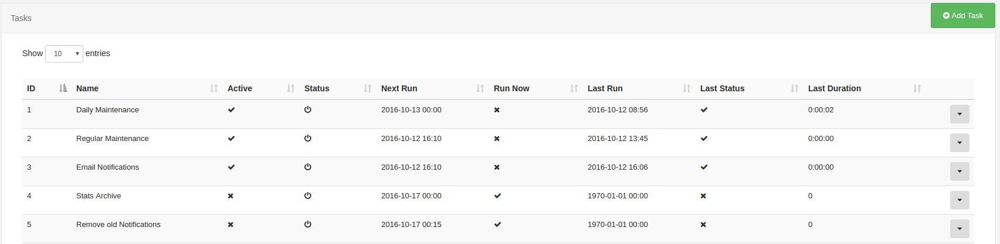

Routine Tasks
XTR is Xibo's task scheduler and caters for running routine tasks on the CMS. Typical tasks include Maintenance, Email Alerts, Archiving and 3rd party integrations.
Administration
Tasks and their recent status can be viewed from the CMS web portal by navigating to the Administration -> Tasks page. This page is usually only available to Super Admin users.

System Tasks
Xibo comes with some pre-configured tasks which we recommend activating on all installations. These are:
- Daily Maintenance
- Regular Maintenance
- Email Notifications
- Stats Archive
- Remove old Notifications
Maintenance
Maintenance tasks require some further configuration and are discussed in their own Maintenance Section.
Email Notifications
The Email Notifications task sends any email notifications that are due, these can be user submitted notifications or system notifications.
Only users who have email addresses configured will receive notifications and only if they are manually assigned the notification, or have the "receive system notifications" flag checked on their user account or a group they belong to.
The "admin email address" configured in CMS Settings -> Maintenance will also receive an email notification for any system notifications.
Stats Archive
The stats archive task exports old statistics to a CSV file which can be opened in a spread sheet program. It ZIP's the CSV and adds it to the Library for later download.
The default period is 7 days with the task set to run every Monday at midnight.
Archived stats will be deleted and cannot be retrieved, other than in the CSV file.
Remove old Notifications
This task removes system notifications older than 7 days. The 7 day period can be configured on the task.
Custom Tasks
The CMS will look in the /custom folder for any file ending in .task, these files will be loaded
into the Task Add form for deployment on the CMS.
The .task file should contain the Tasks configuration information, including an auto-loaded class
definition for the task. An example is shown below:
{
"name": "My Custom Task",
"class": "\\Xibo\\Custom\\CustomTask",
"options": {
"option1": "value1"
}
}This task would expect to be able to instantiate \Xibo\Custom\CustomTask at runtime.